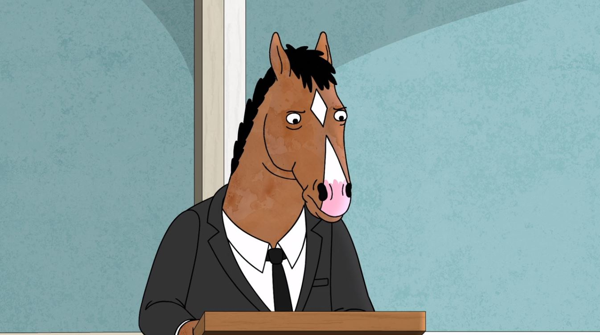

Here I am, BoJack Horseman, doing a eulogy, let’s go. Hey, piano man, can I get a, like an organ flourish? [organ plays] Nicely done. You know, I was a little worried I wouldn’t have the right accompaniment today. I guess it’s a good thing my mom was an organ donor! [rimshot plays] What happened to the organ? [horn ‘oogahs’] Okay, why just leave the comedy to the professionals? Okay? This is a funeral, sir, for my mother. Can you show a little respect? [trumpet whines] I’ll take it. Beatrice Horseman, who was she? What was her deal? Well, she was a horse. Uh, she was born in 1938. She died in 2018. One time, she went to a parade, and one time, she smoked an entire cigarette in one long inhale. I watched her do it. Truly a remarkable woman.
Here’s a story. When I was a teenager, I performed a comedy routine for my high school talent show. There was this, uh, cool jacket that I wanted to wear because I thought it would make me look like Albert Brooks. For months, I saved up for this jacket. But when I finally had enough, I went to the store and it was gone. They had just sold it to someone else. So, I went home and I told my mother, and she said, “Let that be a lesson. That’s the good that comes from wanting things.” She was really good at dispensing life lessons that always seemed to circle back to everything being my fault. But then, on the day of the talent show, my mother had a surprise for me. She had bought me the jacket. Even though she didn’t know how to say it, I know this meant that she loved me. Now that’s a good story about my mother. It’s not true, but it’s a good story, right? I stole it from an episode of Maude I saw when I was a kid, where she talks about her father. I remember when I saw it, thinking, “That’s the kind of story I want to tell about my parents when they die.”But I don’t have any stories like that. All I know about being good, I learned from TV. And in TV, flawed characters are constantly showing people they care with these surprising grand gestures. And I think that part of me still believes that’s what love is. But in real life, the big gesture isn’t enough. You need to be consistent, you need to be dependably good. You can’t just screw everything up and then take a boat out into the ocean to save your best friend, or solve a mystery, and fly to Kansas. You need to do it every day, which is so… hard.
Well. No point beating a dead horse. Beatrice Horseman was born in 1938, and she died in 2018, and I have no idea… what she wanted. Unless she just wanted what we all want… to be seen. Is this Funeral Parlor B?